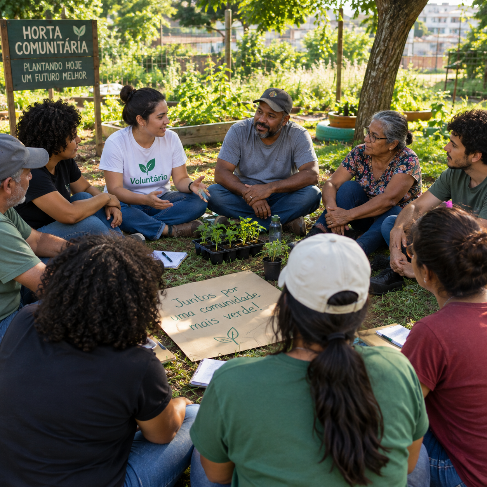

Missão
Ampliar o acesso a educação, alimentação digna e trabalho.
Atuamos em comunidades vulneráveis com projetos de educação, segurança alimentar e geração de renda. Cada doação e cada hora voluntária viram impacto mensurável.

Uma rede que acredita em mudança construída com método, escuta e continuidade.
Ampliar o acesso a educação, alimentação digna e trabalho.
Comunidades autônomas, capazes de decidir sobre o próprio futuro.
Transparência, protagonismo local, equidade e impacto mensurável.
Iniciativas contínuas, avaliadas por indicadores claros.
Reforço escolar e preparação para o mercado de trabalho.
Hortas comunitárias e distribuição de cestas.
Capacitação e acompanhamento para formalização.
Dados auditados do último exercício.
Escolha como quer contribuir. Toda ajuda vira impacto real.